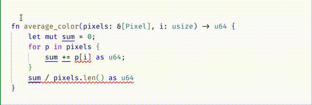
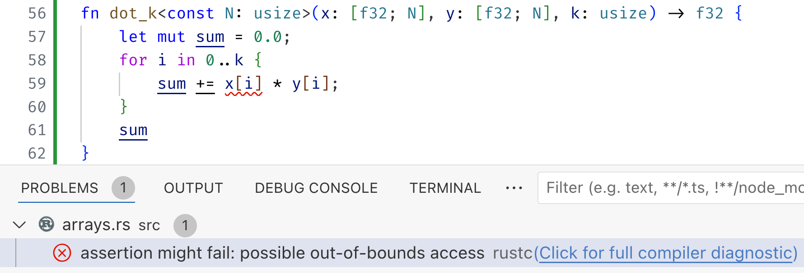
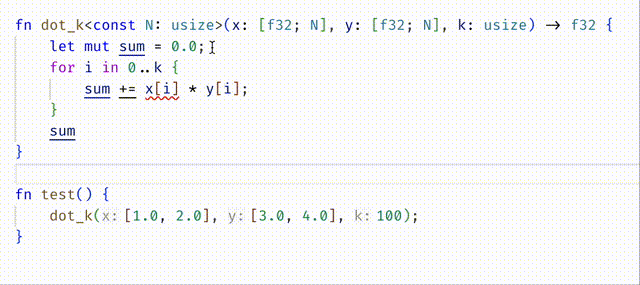
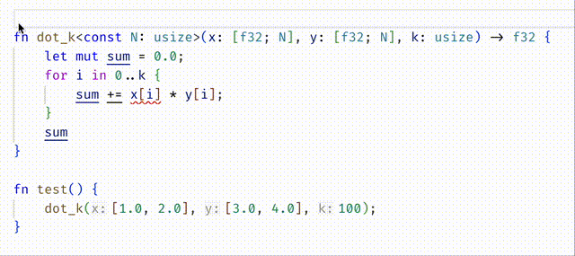

Const Generics
Rust has a built-in notion of arrays : collections of objects of
the same type T whose size is known at compile time. The fact that
the sizes are known allows them to be allocated contiguously in memory,
which makes for fast access and manipulation.
When I asked ChatGPT what arrays were useful for, it replied
with several nice examples, including low-level systems programming (e.g.
packets of data represented as structs with array-valued fields), storing configuration data, or small sets of related values (e.g. RGB values for a pixel).
#![allow(unused)] fn main() { type Pixel = [u8; 3]; // RGB values let pix0: Pixel = [255, 0, 127]; let pix1: Pixel = [ 0, 255, 127]; }
Compile-time Safety...
As the size of the array is known at compile time, Rust can make sure that we don't create arrays of the wrong size, or access them out of bounds.
For example, rustc will grumble if you try to make a Pixel with 4 elements:
#![allow(unused)] fn main() { | 52 | let pix2 : Pixel = [0,0,0,0]; | ----- ^^^^^^^^^ expected an array with a fixed size of 3 elements, found one with 4 elements | | | expected due to this }
Similarly, rustc will wag a finger if you try to access a Pixel at an invalid index.
#![allow(unused)] fn main() { | 54 | let blue0 = pix0[3]; | ^^^^^^^ index out of bounds: the length is 3 but the index is 3 | }
... Run-time Panic!
However, the plain type system works only upto a point. For example, consider the
following function to compute the average color value of a collection of &[Pixel]
#![allow(unused)] fn main() { fn average_color(pixels: &[Pixel], i: usize) -> u64 { let mut sum = 0; for p in pixels { sum += p[i] as u64; } sum / pixels.len() as u64 } }
Now, rustc will not complain about the above code, even though it may panic if
color is out of bounds (or of course, if the slice pixels is empty!).
For example, the following code
fn main() { let pixels = [ [255, 0, 0], [0, 255, 0], [0, 0, 255] ]; let avg = average(&pixels, 3); println!("Average: {}", avg); }
panics at runtime:
thread 'main' panicked ... index out of bounds: the len is 3 but the index is 3
Refined Compile-time Safety
Fortunately, flux knows about the sizes of arrays and slices. At compile time,
flux warns about two possible errors in average_color
- The index
imay be out of bounds when accessingp[i]and - The division can panic as
pixelsmay be empty (i.e. have length0).
We can fix these errors by requiring that the input
ibe a valid color index, i.e.i < 3andpixelsbe non-empty, i.e. have sizenwheren > 0
#![allow(unused)] fn main() { #[spec(fn(pixels: &[Pixel][@n], i:usize{i < 3}) -> u64 requires n > 0)] }
Const Generics
Rust also lets us write arrays that are generic over the size. For example,
suppose we want to take two input arrays x and y of the same size N and
compute their dot product. We can write
#![allow(unused)] fn main() { fn dot<const N:usize>(x: [f32;N], y: [f32;N]) -> f32 { let mut sum = 0.0; for i in 0..N { sum += x[i] * y[i]; } sum } }
This is very convenient because rustc will prevent us from calling dot with
arrays of different sizes, for example we get a compile-time error
#![allow(unused)] fn main() { | 68 | dot([1.0, 2.0], [3.0, 4.0, 5.0]); | --- ^^^^^^^^^^^^^^^ expected an array with a fixed size of 2 elements, found one with 3 elements | | | arguments to this function are incorrect | }
However, suppose we wanted to compute the dot product of just the first k elements
#![allow(unused)] fn main() { fn dot_k<const N:usize>(x: [f32;N], y: [f32;N], k: usize) -> f32 { let mut sum = 0.0; for i in 0..k { sum += x[i] * y[i]; } sum } }
Now, unfortunately, rustc will not prevent us from calling dot_k with k set to a value that is too large!
#![allow(unused)] fn main() { thread 'main' panicked at ... index out of bounds: the len is 2 but the index is 2 }
Yikes.
Refined Const Generics
Fortunately, flux understands const-generics as well!
First off, it warns us about the fact that the accesses with the index may be out of bounds.
We can fix it in two ways.
- The permissive approach is to accept any
kbut restrict the iteration to the valid elements
#![allow(unused)] fn main() { fn dot_k<const N:usize>(x: [f32;N], y: [f32;N], k: usize) -> f32 { let mut sum = 0.0; let n = if k < N { k } else { N }; for i in 0..n { sum += x[i] * y[i]; } sum } }
- The strict approach is to require that
kbe less than or equal toN
#![allow(unused)] fn main() { #[spec(fn(x: [f32;N], y: [f32;N], k:usize{k <= N}) -> f32)] fn dot_k<const N:usize>(x: [f32;N], y: [f32;N], k: usize) -> f32 { let mut sum = 0.0; for i in 0..k { sum += x[i] * y[i]; } sum } }
Do you understand why
(1) Adding the type signature moved the error from the body of dot_k into the call-site inside test?
(2) Then editing test to call dot_k with k=2 fixed the error?
Summary
Rust's (sized) arrays are great, and flux's refinements make them even better,
by ensuring indices are guaranteed to be within the arrays bounds. Const generics
let us write functions that are polymorphic over array sizes, and again, refinements
let us precisely track those sizes to prevent out-of-bounds errors!